ئەم ڕێنماییە هەموو پەڕە، هەموو دوگمە و هەموو یاسایەکی سیستەمەکە ڕوون دەکاتەوە.
بۆ خوێندنەوەی خێرا، بەشی ٣ («کارە ڕۆژانەکان») بەس دەکات.
پێش هەر دوگمەیەک، ئەم بەشە ڕوون دەکاتەوە سیستەمەکە چۆن بیر دەکاتەوە: کتاب چۆن دێت، چۆن دەجوڵێت، و چۆن دەچێتە دەرەوە.
شارەوانی ڕانیە ڕۆژانە کتاب و داواکاری وەردەگرێت، دەیاننێرێت بۆ ژوورەکان، ژوورەکان کاریان لەسەر دەکەن، و لە کۆتاییدا وەڵامێک دەنێردرێت. ئەم سیستەمە هەمان ئەو کارە دەکات، بەڵام لە هەموو ساتێکدا دەزانێت هەر کتابێک لەسەر کام مێزە و چەند ڕۆژە لەوێیە.
چی زیاد دەکات بەسەر ئەو شێوازەی کە ئێستا هەیە:
| ژمارە | چییە | نموونە |
|---|---|---|
| ژمارەی هاتوو (ه) | ژمارەی کتابی هاتوو. پێشگری «ه»، ساڵ، ئینجا ژمارەی ڕیز. | ه/٢٠٢٦/٢٥ |
| ژمارەی دەرچوو (د) | کاتی داخستن دەدرێت، بۆ وەڵامی نێردراو. | د/٢٠٢٦/١٨٧ |
| لیستی گەیاندن (گ) | ژمارەی ئەو لیستەی کاغەز پێی دەگوازرێتەوە. | گ/٢٠٢٦/٤٢ |
| بارکۆد | هەمان کتاب بە ژمارەی ئینگلیزی، بۆ خوێندنەوە بە ئامێر. ژمارەیەکی پشکنین لە کۆتاییدا هەیە، بۆیە بارکۆدی هەڵە هیچ کتابێک ناداتەوە. | 20260000253 |
| ژمارەی نهێنی (PIN) | شەش ژمارە، تەنها لەسەر پسوولەی هاووڵاتی. بەبێ ئەمە بارکۆد هیچ ناکات لە پەڕەی بەدواداچوون. | 482913 |
| کۆدی پشتڕاستکردنەوە | دە پیت، لەسەر کتابی دەرچوو. هەرکەس دەتوانێت پێی بزانێت کتابەکە ڕاستە یان ساختەیە. | X3LZ-H367-QG |
ژمارەی کتاب هەرگیز دووبارە بەکار ناهێنرێتەوە، تەنانەت ئەگەر کتابەکە هەڵوەشێنرایەوە. ئەگەر کتابێک هەڵوەشێنرایەوە، ژمارەکەی لەگەڵیدا دەمێنێتەوە و شوێنەکەی بەتاڵ نابێتەوە.
ئەمە گرنگترین بیرۆکەی سیستەمەکەیە. سیستەم دوو گەیشتن جیا تۆمار دەکات:
| گەیشتن | واتای |
|---|---|
| کرایەوە لەسەر شاشە | کەسێک لە ژوورەکەدا کتابەکەی لەسەر شاشە کردووەتەوە. ئەمە خۆکارە. |
| پەڕگەی کاغەزی وەرگیرا | کەسێک لە ژوورەکەدا دۆسیەی کاغەزی بە دەستەوەیە و خۆی ئەوەی تۆمار کردووە. |
ئەو ماوەیەی نێوان ئەم دووانە، ئەو کاتەیە کە کاغەزەکە لە هۆڵ یان لەسەر مێزی فۆتۆکۆپی ماوەتەوە. لە «کتابە هاتووەکان» ستوونی پەڕگە هەمیشە دەڵێت ئایا دۆسیەکە گەیشتووە یان نا.
نۆ ڕۆڵ هەیە. هەر هەژمارێک یەک ڕۆڵی هەیە، و ڕۆڵەکە دیاری دەکات چی دەبینێت و چی دەکات.
| ڕۆڵ | چی دەکات |
|---|---|
| سەرۆکی شارەوانی | هەموو شتێک دەبینێت: داشبۆرد، هەموو ژوورەکان، ڕاپۆرت، ئاگادارییە ئەمنییەکان، یاریدەدەر. دەتوانێت سیستەم قوفڵ بکات. |
| جێگری سەرۆک | هەمان دەسەڵاتی سەرۆک، جگە لە قوفڵکردنی سیستەم. |
| بەڕێوەبەر | ژوورەکانی بەڕێوەبەرایەتی خۆی دەبینێت، ڕاپۆرتی ئەوان، و کتابەکانیان. |
| بەرپرسی ژوور | کتابەکانی ژوورەکەی خۆی، دابەشکردنیان بەسەر کارمەنداندا، ڕاپۆرتی ژوورەکەی، و تۆماری چالاکی ژوورەکەی. |
| کارمەندی ژوور | کتابەکانی ژوورەکەی خۆی: دەیانخوێنێتەوە، تێبینی دەنووسێت و تەواویان دەکات. |
| کارمەندی هات و دەرچوو | تۆمارکردنی کتاب، پسوولە، لیستی گەیاندن، ژمارەی دەرچوو و داخستن. |
| کارمەندی ئەرشیف | نەخشە و DWGـەکان: تۆمارکردن، پشتڕاستکردنەوە و بەستنەوەیان بە کتابەوە. |
| کارگێڕی | مۆڵەتەکان و تێمپلەیتەکان. |
| بەڕێوەبەری سیستەم (IT) | هەژمار و ژوور دروست دەکات و تۆماری چالاکی دەبینێت. ناتوانێت هیچ کتابێک بخوێنێتەوە. |
ئەمە تەنها شاردنەوەی دوگمە نییە. لە ناو بنکەی دراوەکاندا جێبەجێ کراوە: تەنانەت ئەگەر IT ناونیشانی کتابێک بنووسێت، سیستەم دەڵێت «نەدۆزرایەوە». هەر هەوڵێکی ئەو جۆرە خۆی ئاگادارییەکی ئەمنی بۆ سەرۆک دروست دەکات.
هەر ژوورێک ماوەیەکی دیاریکراوی هەیە. دوای ئەو ماوەیە، کتابەکە بە دواکەوتوو نیشان دەکرێت.
| ژوور | ژمارە | ماوە (ڕۆژ) | بەرپرس | جێگر |
|---|---|---|---|---|
| ژووری هات و دەرچوو | — | ١ | شیلان عومەر | — |
| ژووری سەرۆکی شارەوانی | — | ٢ | ئارام حەمە | نەبەز تۆفیق |
| ژووری یاسا | — | ٣ | هێمن ڕەشید | ساکار ئەحمەد |
| ژووری زەوی و زار | — | ٤ | هێرش قادر | — |
| ژووری ژمێریاری | — | ٤ | سۆزان مەحمود | — |
| ژووری کارگێڕی | — | ٢ | بەفرین سەلام | شنە عەبدوڵا |
| گرێبەستە گشتییەکان | ١٤ | ٥ | دلێر عەلی | ڕێبوار مستەفا |
| نەخشەی بنەڕەتی | ٨ | ٣ | کاروان ئیبراهیم | — |
| نەخشەی بنەڕەتی | ٩ | ٣ | ژیان کەریم | — |
جێگر گرنگە. کاتێک بەرپرسی ژوورێک لە مۆڵەتی پەسەندکراودایە، ئەو کتابانەی بۆ ئەو ژوورە دەنێردرێن دەچنە لای جێگرەکەی. ئەو ژوورانەی جێگریان نییە، کتابەکە چاوەڕێ دەکات — ئەمە بە ئەنقەستە، نەک هەڵە.
| دۆخ | واتای |
|---|---|
| تۆمارکراو | تۆمارکراوە بەڵام هێشتا بۆ هیچ ژوورێک نەنێردراوە. |
| لەژێر کاردا | لای ژوورێکە و کاری لەسەر دەکرێت. |
| ئامادەی داخستن | ژوورەکان کارەکەیان تەواو کردووە، چاوەڕێی وەڵام و ژمارەی دەرچوون. |
| داخراو | وەڵام نێردراوە و ژمارەی دەرچووی وەرگرتووە. |
| هەڵوەشێنراوە | کتابەکە هەڵوەشێنراوەتەوە. ژمارەکەی دەمێنێتەوە و هۆکارەکە تۆمار دەکرێت. |
| ڕەشنووس | وەڵامێکی نووسراو کە هێشتا نەنێردراوە. |
چۆن بچیتە ژوورەوە، ڕووکارەکە چۆن دابەش بووە، و چۆن لەسەر مۆبایل بەکاری بهێنیت.
سیستەم بە ناوی بەکارهێنەر دەچرێتە ژوورەوە، نەک بە ئیمەیڵ. ناوی بەکارهێنەر هەمیشە بە پیتی ئینگلیزی بچووکە.
| شوێن | ناونیشان | وشەی نهێنی |
|---|---|---|
| سایتی نموونە | https://sharawani01.vercel.app | لە ئیبراهیم بپرسە |
| ناوخۆیی (ئەم کۆمپیوتەرە) | http://localhost:3111 | guhare-2026 |
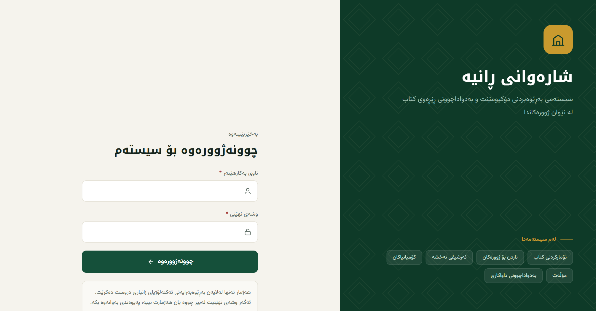
| ناوی بەکارهێنەر | ناو | ڕۆڵ | ژوور |
|---|---|---|---|
| aram | ئارام حەمە | سەرۆکی شارەوانی | ژووری سەرۆکی شارەوانی |
| nabaz | نەبەز تۆفیق | جێگری سەرۆک | ژووری سەرۆکی شارەوانی |
| dana | دانا فەرەج | بەڕێوەبەری گشتی | ژووری زەوی و زار |
| shilan | شیلان عومەر | کارمەندی هات و دەرچوو | ژووری هات و دەرچوو |
| ahang | ئاھەنگ نەوزاد | کارمەندی ژوور | ژووری هات و دەرچوو |
| hemin | هێمن ڕەشید | بەرپرسی ژوور | ژووری یاسا |
| sakar | ساکار ئەحمەد | کارمەندی ژوور | ژووری یاسا |
| dler | دلێر عەلی | بەرپرسی ژوور | گرێبەستە گشتییەکان (١٤) |
| rebwar | ڕێبوار مستەفا | کارمەندی ژوور | گرێبەستە گشتییەکان (١٤) |
| hersh | هێرش قادر | بەرپرسی ژوور | ژووری زەوی و زار |
| sozan | سۆزان مەحمود | بەرپرسی ژوور | ژووری ژمێریاری |
| bafrin | بەفرین سەلام | کارگێڕی | ژووری کارگێڕی |
| shne | شنە عەبدوڵا | کارمەندی ژوور | ژووری کارگێڕی |
| karwan | کاروان ئیبراهیم | کارمەندی ئەرشیف | نەخشەی بنەڕەتی (٨) |
| zhyan | ژیان کەریم | کارمەندی ئەرشیف | نەخشەی بنەڕەتی (٩) |
| itadmin | بەڕێوەبەری سیستەم | IT | — |
هەموو پەڕەکان یەک شێوەیان هەیە:
هەر کارێک بە هەنگاو. ئەمە ئەو بەشەیە کە ڕۆژانە پێویستت پێیەتی.
کێ: کارمەندی هات و دەرچوو، و هەر ژوورێکی تر کە کتابێکی نوێ دەست پێدەکات. | لە کوێ: «ژووری هات و دەرچوو» ← «کتابی نوێ».
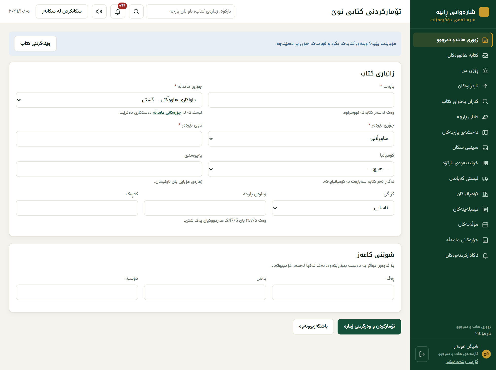
پێش تۆمارکردن، سیستەم بە بابەت و ناوی نێردەر دەگەڕێت. ئەگەر کتابێکی هاوشێوەی دۆزییەوە، لیستێکت پیشان دەدات. دوو هەڵبژاردەت هەیە:
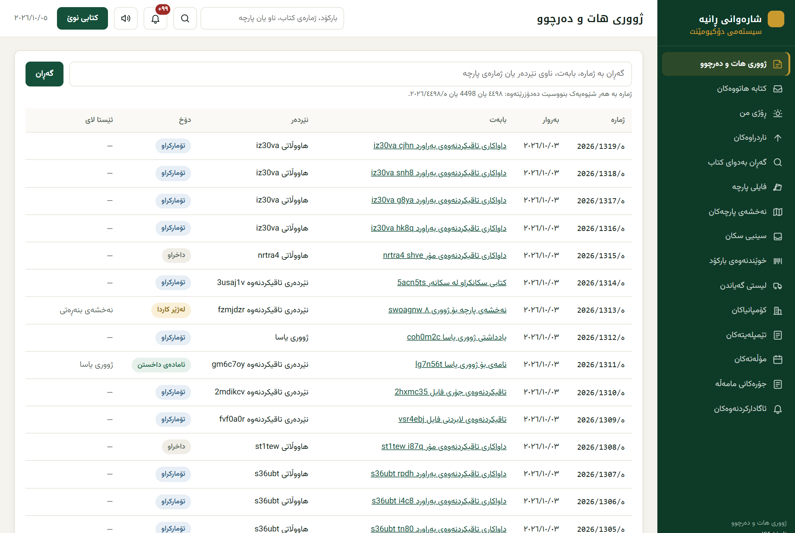
دوای تۆمارکردن، لە پەڕەی کتابەکە دوگمەی «چاپی پسوولە» هەیە. پسوولەکە ئەمانەی لەسەرە: ژمارەی کتاب، بەروار، بابەت، بارکۆد، ژمارەی نهێنی شەش ژمارەیی و QR کۆد.
پسوولەکە بدە بە هاووڵاتی و پێی بڵێ: «لە ماڵەوە دەتوانیت لەم ناونیشانە بزانیت داواکارییەکەت لە کام ژوورە.» QRـەکە ڕاستەوخۆ پەڕەکە دەکاتەوە و بارکۆدەکەش پڕ دەکاتەوە؛ تەنها ژمارە نهێنییەکە دەنووسێت.
لە کوێ: پەڕەی کتابەکە ← کارتی «هاوپێچەکان».
دوای لکاندن، لەتەنیشت هەر فایلێک ئەم دوگمانە هەن:
| دوگمە | چی دەکات |
|---|---|
| بینین | فایلەکە لە ناو سیستەمدا دەکرێتەوە، بەبێ داگرتن. PDF و وێنە پەڕە بە پەڕە پیشان دەدرێن. |
| مۆرکردن | مۆری هاتوو یان دەرچوو لەسەر ئەو سکانە دادەنێت (بڕوانە ٣.٤). |
| داگرتن | فایلەکە دادەگریت. هەر داگرتنێک تۆمار دەکرێت. |
| پشکنینی دەستکاری | دەڵێت ئایا فایلەکە لەو کاتەوەی بارکراوە گۆڕدراوە یان نا. |
| خوێندنەوەی نووسین | ئەو دەقەی لە سکانەکەدا خوێندراوەتەوە پیشان دەدات — ئەمە وایدەکات گەڕان ناوەڕۆکی سکانیش بدۆزێتەوە. |
فایلی ڤایرۆسدار ڕەت دەکرێتەوە و تۆمار دەکرێت. قەبارەی زۆرترین ٥٠ مێگابایتە.
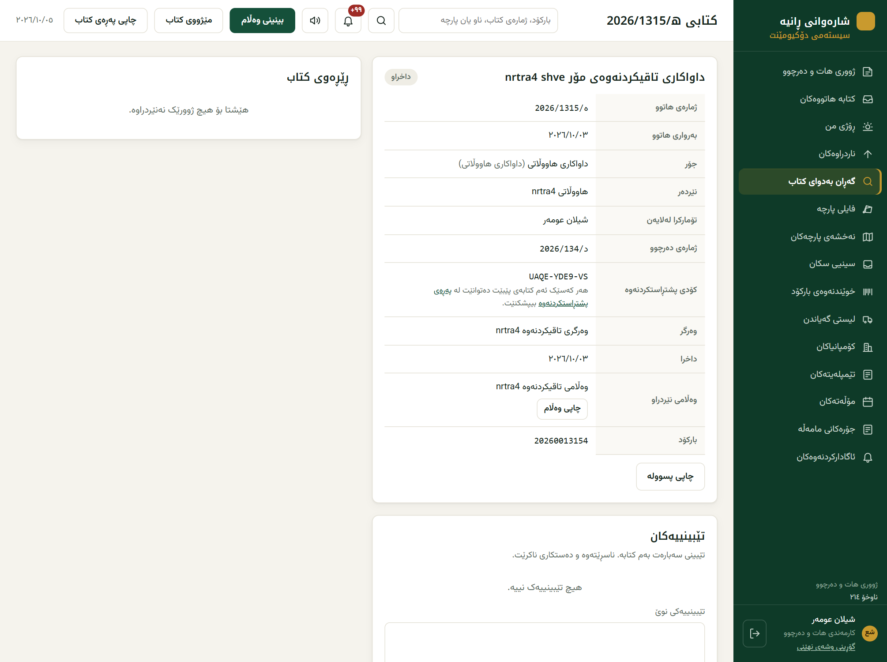
کێ: هەموو کارمەندانی ژوورەکان. | لە کوێ: لەتەنیشت سکانەکە ← «مۆرکردن».
وەک ئەوەی لەسەر کاغەز مۆری ڕەش لێدەدەیت. جیاوازییەکە ئەوەیە کە شوێنەکەی تۆ دیاری دەکەیت و فایلی کۆن هەرگیز دەستکاری ناکرێت — کۆپییەکی نوێی مۆرکراو دروست دەبێت.
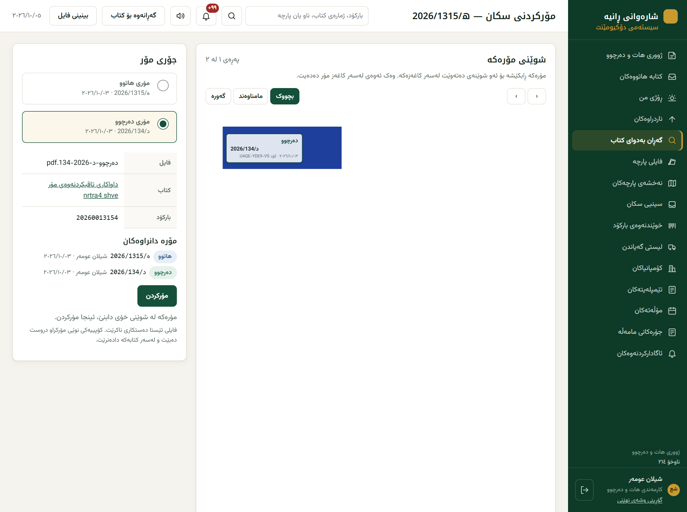
ئەوەی لەسەر مۆرەکە دەنووسرێت:
| جۆری مۆر | ناوەڕۆک |
|---|---|
| هاتوو | وشەی «هاتوو»، ژمارەی هاتوو، بەرواری تۆمار، و بارکۆد — ئەو ژمارەیەی هاووڵاتی لە پەڕەی بەدواداچووندا بەکاری دەهێنێت. |
| دەرچوو | وشەی «دەرچوو»، ژمارەی دەرچوو، بەرواری ناردن، و کۆدی پشتڕاستکردنەوە. |
کاتێک کتابەکە هێشتا داخرا نەکراوە، مۆری دەرچوو ناچالاکە و دەڵێت «هێشتا ژمارەی دەرچووی نییە». ئەمە بە ئەنقەستە: مۆرەکە ئەو ژمارەیە هەڵدەگرێت و پێش هەبوونی، هیچی نییە بینووسرێت.
کێ: ئەو کەسەی کتابەکەی لای خۆیەتی، یان سەرۆک و جێگرەکەی. | لە کوێ: پەڕەی کتابەکە ← کارتی «ناردن».
ئەگەر پێویستە چەند ژوورێک یەک لەدوای یەک کاری لەسەر بکەن، ژوورەکان بە ڕیزەوە هەڵبژێرە و «ناردن بە ڕیزبەندی» دابگرە. کتابەکە خۆی دەچێتە ژووری دواتر کاتێک ژووری پێشوو تەواوی دەکات؛ پێویست ناکات کەس دوایان بکەوێت.
ئەگەر بە هەڵە ناردت، دوگمەی «گەڕاندنەوەی ناردنەکە» ناردنەکە پووچ دەکاتەوە — بەڵام تەنها پێش ئەوەی ژوورەکە کاری لەسەر بکات. ئەمە لە تۆماردا دەمێنێتەوە.
لە کوێ: «کتابە هاتووەکان».
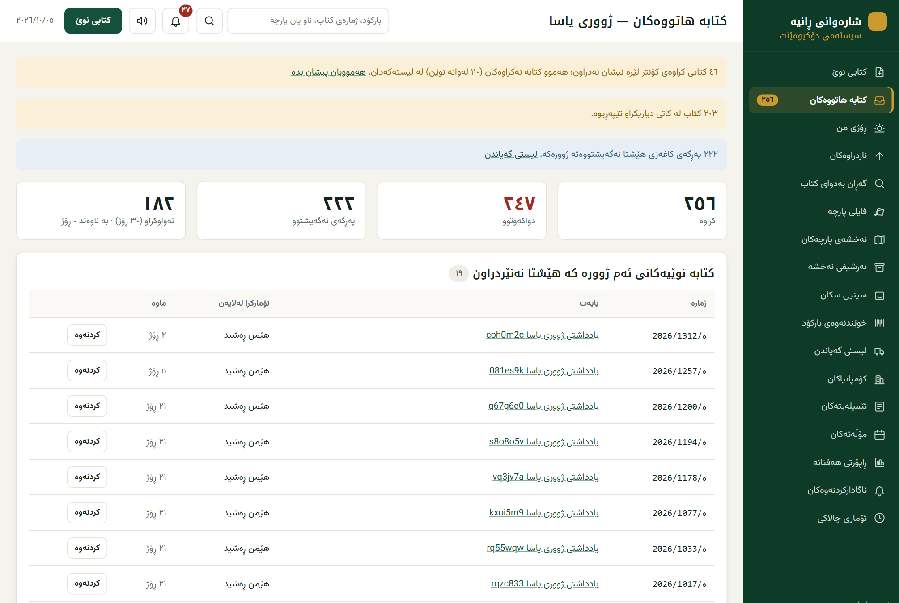
کاتێک ژوورەکەت کارەکەی تەواو کرد، سێ ڕێگا هەیە:
| دوگمە | کەی بەکاری بهێنیت |
|---|---|
| تەواوکردنی هەنگاو | کارەکەت تەواوە. کردارێک هەڵدەبژێریت و وەڵامێکی کورت دەنووسیت. کتابەکە خۆی دەچێتە هەنگاوی دواتر. |
| گەڕاندنەوە بۆ نێردەر | کتابەکە بۆ تۆ نەبووە، یان زانیاری کەمە. دەگەڕێتەوە لای ئەو کەسەی ناردوویەتی، لەگەڵ هۆکارەکەت. |
| ناردن بۆ ژوورێکی تر | پێویستە ژوورێکی تر پێشتر کاری لەسەر بکات. ڕێڕەوەکە درێژ دەبێتەوە و لە مێژوودا دیارە. |
کردارەکانی تەواوکردن کە دەتوانیت هەڵیبژێریت:
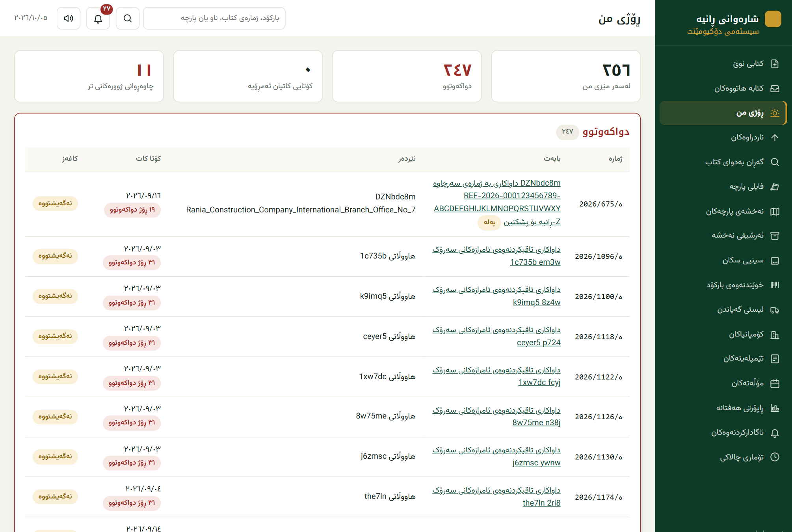
کێ: سەرۆک، جێگر، بەڕێوەبەر، بەرپرسی ژوور. | لە کوێ: پەڕەی کتابەکە ← «نووسینی هامش».
وەک ئەوەی لەسەر کاغەز بە قەڵەم لەسەر کتابەکە دەنووسیت: «بۆ یاسا، بە پەلە»، واژوو، بەروار.
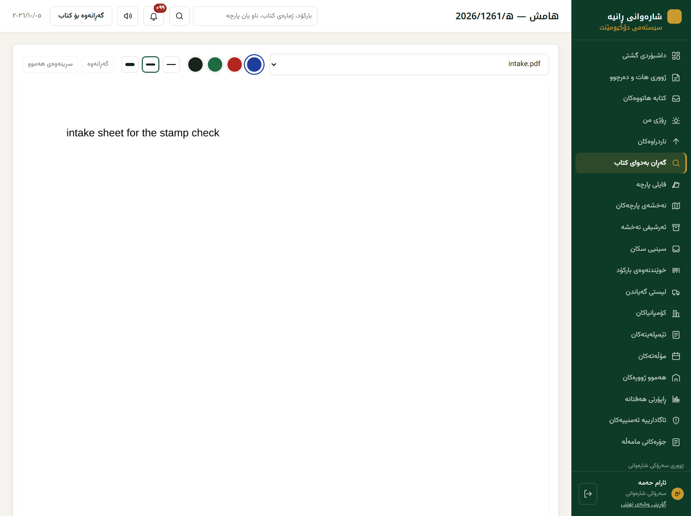
سیستەم ئینکەکە لەسەر ئەو پەڕەیەی سکانەکە دادەنێت، مۆرێک لە گۆشەی خوارەوە زیاد دەکات (ناوی نووسەر، ڕۆڵ، بەروار و کات)، فایلێکی نوێ دروست دەکات بە ناوی «هامشی دەستنووس»، و کتابەکە بۆ ئەو ژوورانە دەنێرێت. قەڵەمی تابلێت: هەرچەند زیاتر فشار بدەیت هێڵەکە ئەستوورتر دەبێت، و پەنجەی لەسەر شووشە دانراو ئەژمار ناکرێت.
کێ: سەرۆک، جێگر، کارمەندی هات و دەرچوو، بەڕێوەبەر، بەرپرسی ژوور. | لە کوێ: پەڕەی کتابەکە ← «نووسینی وەڵام».
لەو ساتەدا: ژمارەی دەرچوو دەدرێت، کتابەکە دادەخرێت، کۆدی پشتڕاستکردنەوە دەرچوێندرێت، و وەڵامەکە ئامادەی چاپکردنە.
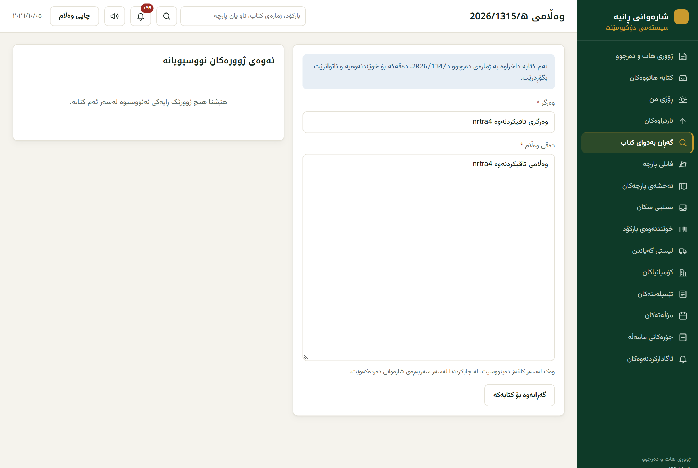
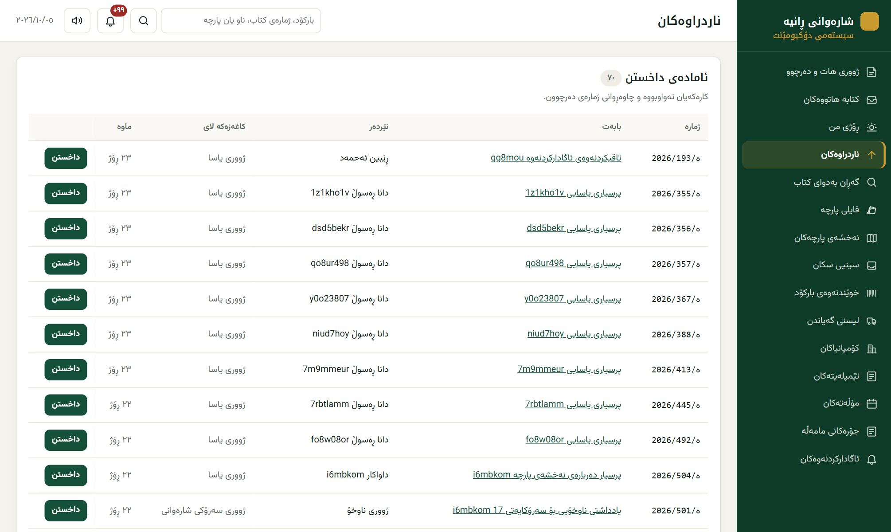
ئەم فایلە خۆکارانە وەک «کۆپی دەرچوو» تۆمار دەکرێت و لە پەڕەی بەراورددا لای چەپ دەردەکەوێت.
| دوگمە | چی چاپ دەکات |
|---|---|
| چاپی پەڕەی کتاب | پەڕەیەکی A4 بە هەموو زانیاری کتابەکە و ڕێڕەوەکەی. بۆ ناو دۆسیەی کاغەزی. |
| چاپی پسوولە | پسوولەی هاووڵاتی، بە بارکۆد و QR و ژمارەی نهێنییەوە. |
| چاپی وەڵام | وەڵامی فەرمی لەسەر سەرپەڕەی شارەوانی، بە QR کۆد و کۆدی پشتڕاستکردنەوەی خوارەوەیەوە. |
| چاپی ڕاپۆرت | ڕاپۆرتی هەفتانە، یەک پەڕە بۆ هەر ژوورێک. |
| چاپکردنی لیستی گەیاندن | لیستی ئەو کتابانەی پێکەوە دەگوازرێنەوە، بۆ واژووی وەرگر. |
لە کوێ: پەڕەی کتابەکە ← «بەراوردی هاتوو و دەرچوو»، یان لە «ناردراوەکان» لەتەنیشت هەر کتابێکی دەرچوو.
ئەم پەڕەیە بۆ ئەو پرسیارە دروستکراوە کە لە پێشەوەی مێز دەکرێت: ئایا ئەم کاغەزەی بە دەستمەوەیە هەمان ئەو وەڵامەیە کە شارەوانی ناردوویەتی؟
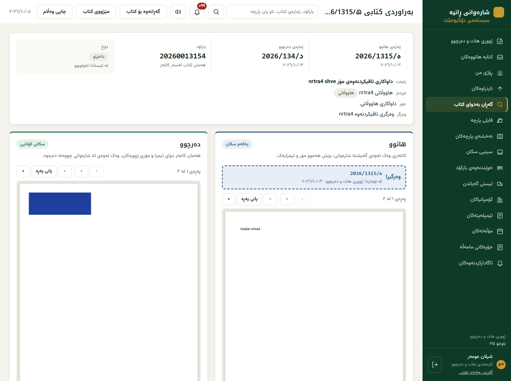
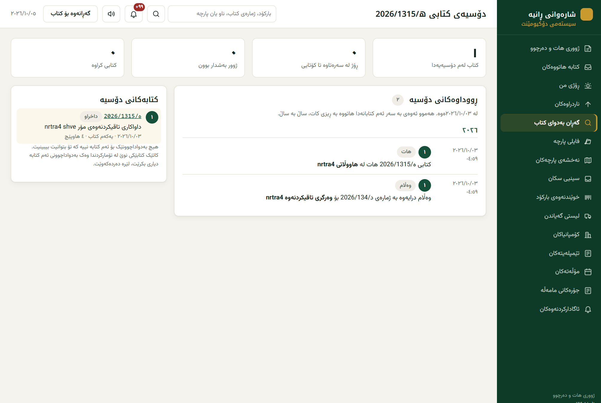
«هەڵوەشاندنەوەی کتاب» تەنها بۆ هەڵەی تۆمارکردن یان داواکارییەکە کە کشێنراوەتەوە. دەبێت هۆکارێک بنووسیت. ژمارەکە نامێنێتەوە بۆ کەسێکی تر و کتابەکە لە تۆماردا دەمێنێتەوە بە دۆخی «هەڵوەشێنراوە». ئەو ژوورانەی کتابەکەیان لایە ئاگادار دەکرێنەوە.
یەک تۆپی گەڕان لە سەرەوەی هەموو پەڕەکان، و پەڕەیەکی تایبەت بە گەڕان. ئەمانە دەناسێتەوە:
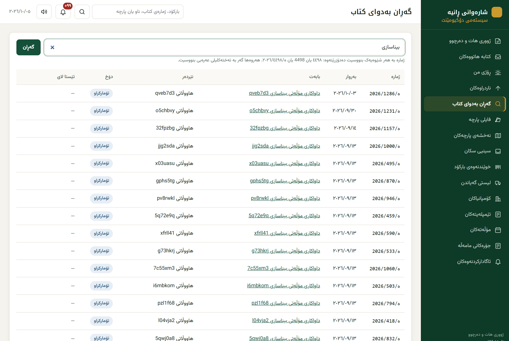
پەڕەی «خوێندنەوەی بارکۆد» بۆ ئەو کاتەیە کە دۆسیەی کاغەزی بە دەستتەوەیە. بارکۆدەکە بخوێنەوە (بە ئامێر یان بە دەست) و کتابەکە ڕاستەوخۆ دەکرێتەوە. لەوێوە دەتوانیت ڕاستەوخۆ «وەرگرتنی پەڕگەی کاغەزی» تۆمار بکەیت.
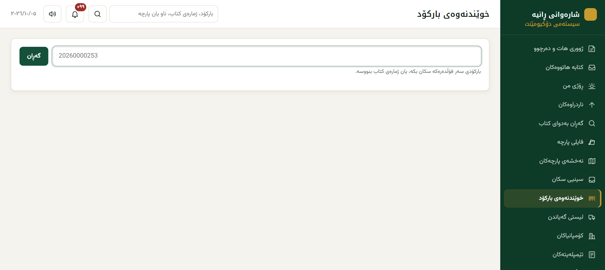
بۆچی: بۆ ئەوەی دیار بێت کاغەز کەی و بە دەستی کێ لە ژوورێکەوە چووە بۆ ژوورێکی تر.
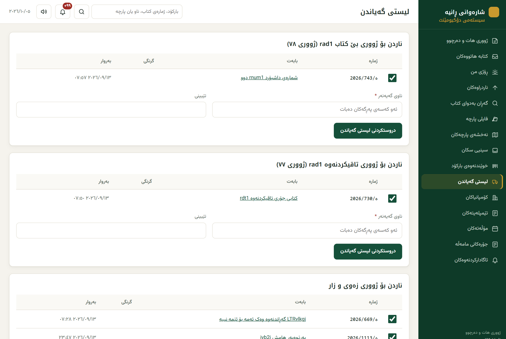
ئەگەر سکانەری هاوبەش هەبێت، هەر شتێک سکان بکرێت دەکەوێتە «سینیی سکان»، بەبێ ئەوەی کەس فایل باربکات. لەوێ:
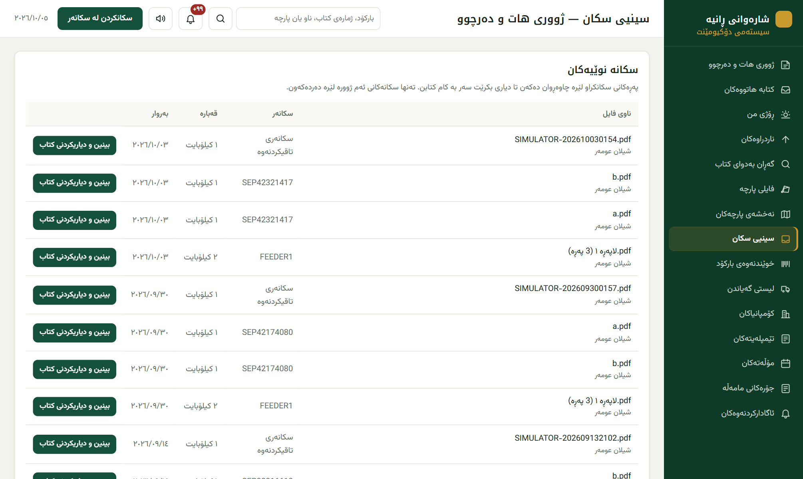
فایلی هەر کۆمپانیایەک: ناو، ژمارەی تۆمار، پەیوەندی، مۆڵەتەکانی لەگەڵ بەرواری بەسەرچوون، و هەموو ئەو کتابانەی پەیوەندییان پێوەیە.
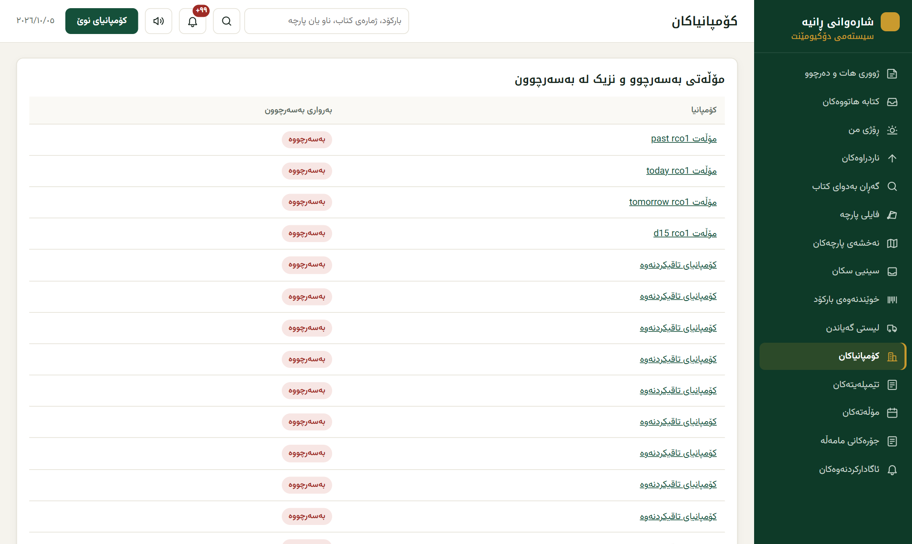
فایلی پارچە: ژمارەی پارچەیەک بنووسە و هەموو مێژووی ئەو پارچە زەوییە لە یەک پەڕەدا وەردەگریت: هەموو کتابەکان بە ڕیزی بەروار، نەخشەکانی ناو ئەرشیف، کۆمپانیا پەیوەندیدارەکان، و ئەوەی ئێستا ڕوودەدات.
نەخشەی پارچەکان: هەمان زانیاری لەسەر نەخشەی ڕانیە. ڕەنگەکان: سوور کتابێکی دواکەوتووی لەسەرە · زەرد کتابێکی کراوەی هەیە · سەوز هەمووی وەڵام دراوەتەوە · شین تەنها نەخشەی ئەرشیف.
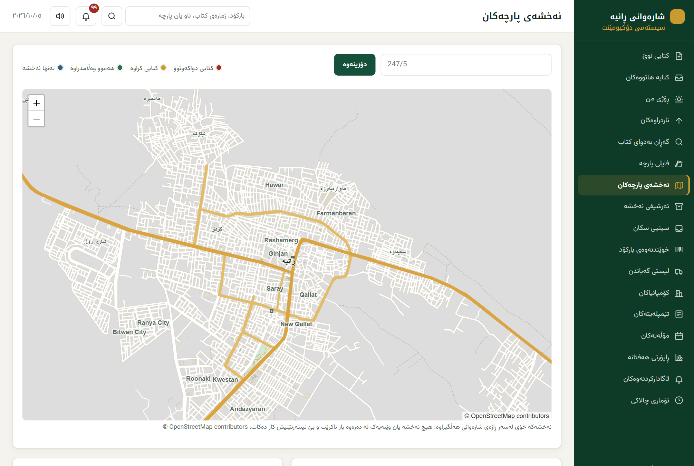
دانانی پارچە لەسەر نەخشە: لە لیستی «پارچەی بێ شوێن» پارچەیەک هەڵبژێرە، «دیاریکردن» دابگرە، ئینجا یان خاڵێک دابنێ یان سنوورەکەی بکێشە و «پاشەکەوتکردن». ئەمە مافی ژووری تۆمارکردن، ئەرشیف، بەرپرسان و سەرۆکە.
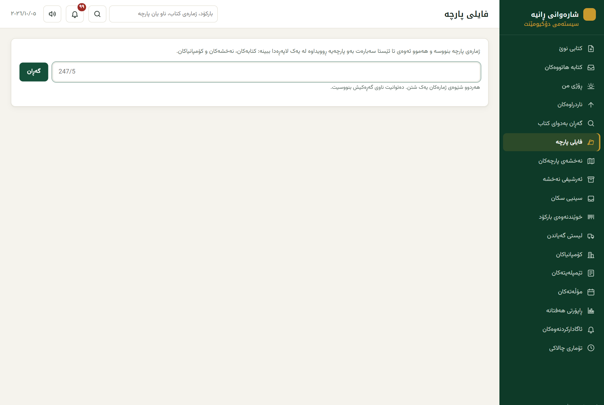
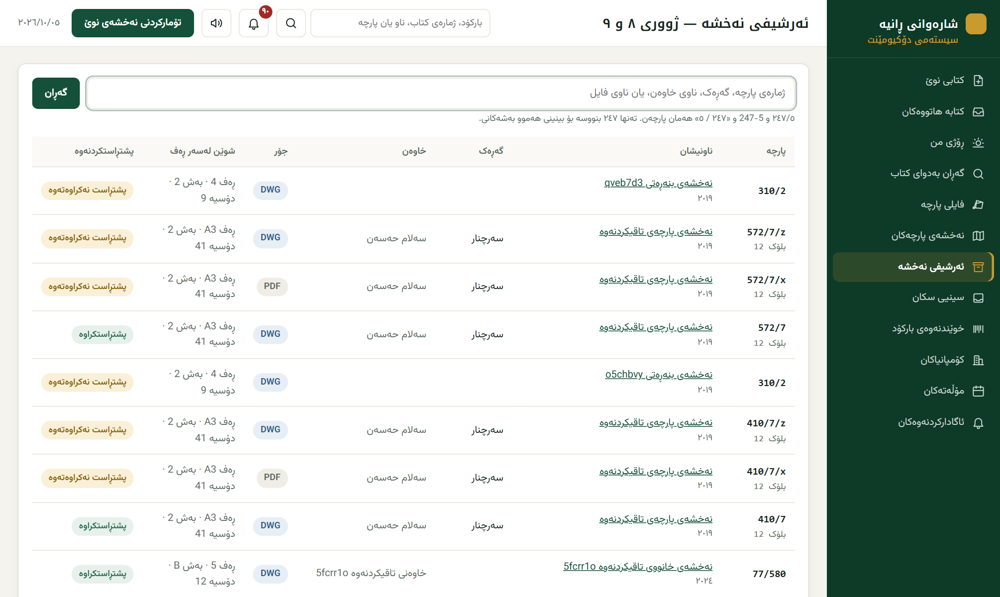
فۆڕمە ئامادەکان: داواکاری مۆڵەت، فۆڕمی ناردن، ڕاسپاردە… «پڕکردنەوە و چاپ» خانەکان پڕ دەکەیتەوە و پەڕەیەکی چاپکراو وەردەگریت. کارگێڕی و سەرۆک دەتوانن تێمپلەیتی نوێ دروست بکەن یان لە لیست لایببەن.
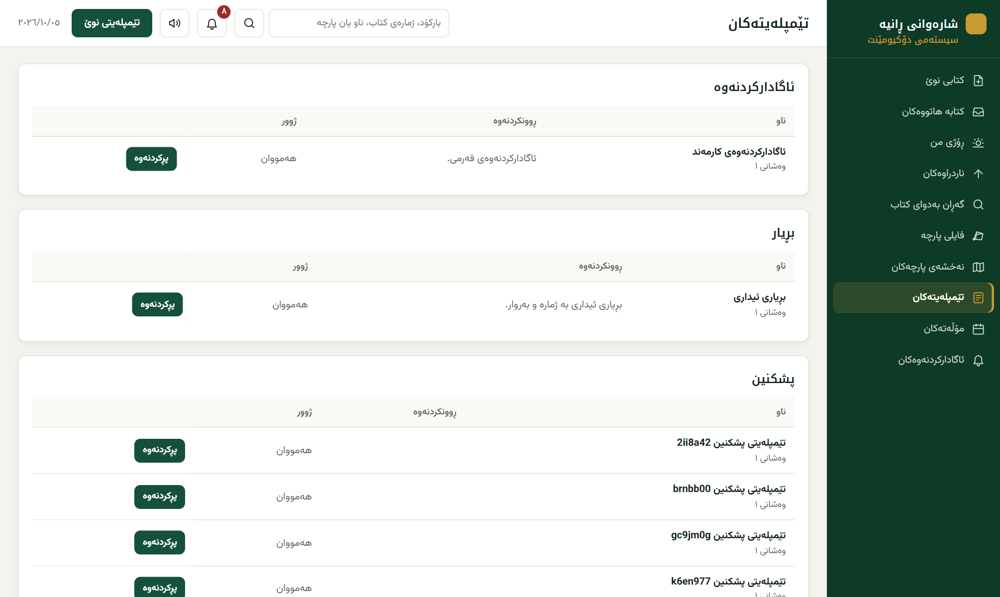
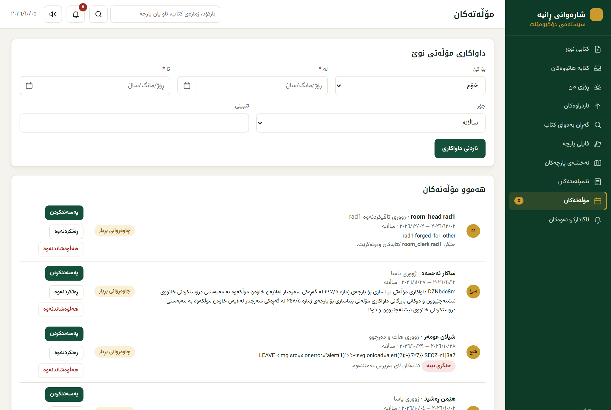
ئەو پەڕانەی تەنها سەرۆک و جێگرەکەی دەیانبینن، و ئەوەی پێیان دەڵێن.
کێ: سەرۆک و جێگرەکەی. | لە کوێ: یەکەم بڕگەی مێنیو.
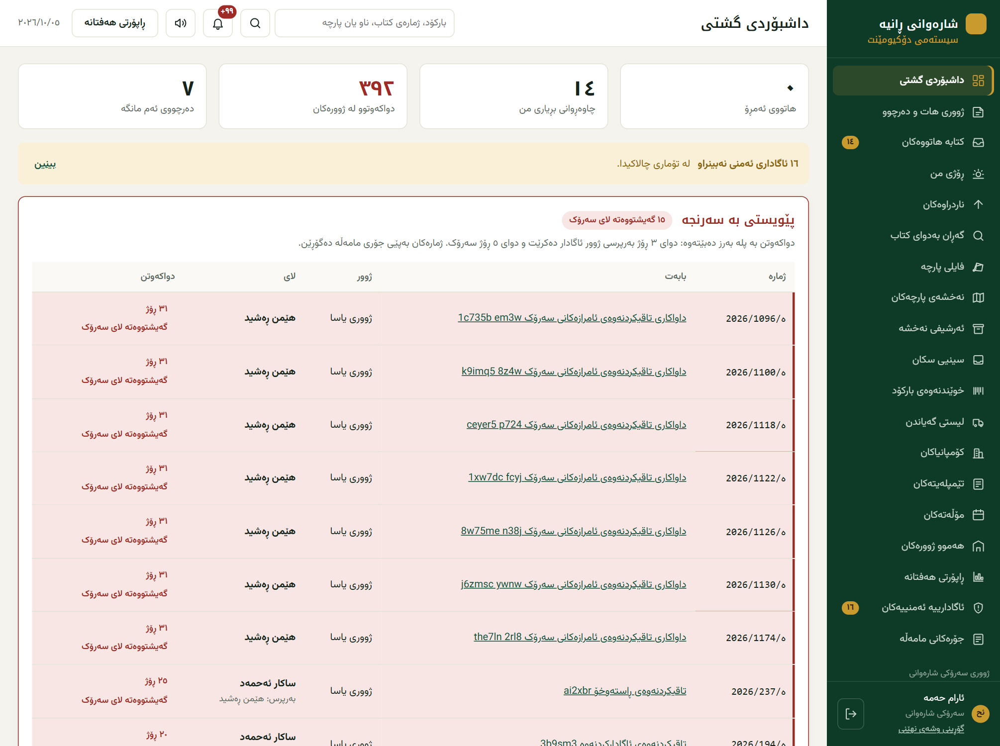
لە سەرەوە چوار ژمارە: کتابی کراوە، چاوەڕوانی بڕیاری تۆ، دواکەوتوو لە ژوورەکان، و دەرچووی ئەم مانگە. ئینجا:
کێ: سەرۆک، جێگر، بەڕێوەبەر (بەڕێوەبەرایەتیی خۆی)، بەرپرسی ژوور (ژوورەکەی خۆی).
هەفتە لە شەممەوە تا هەینی. بۆ هەر ژوورێک، بەراورد لەگەڵ هەفتەی پێشوو:
| ژمارە | واتای |
|---|---|
| هاتوو | چەند کتاب گەیشتووەتە ژوورەکە. |
| تەواوکراو | چەندی تەواو کردووە. |
| تێکڕای ڕۆژ | بە ڕێژەیی چەند ڕۆژی خایاندووە. |
| بە دواکەوتن تەواوکراو | چەندیان دوای کۆتا بەروار تەواو بوون. |
| کراوە لە کۆتایی هەفتە | چەند کتابی کراوەی ماوە. |
| دواکەوتوو لە کۆتایی هەفتە | لەوانە، چەندیان لە کاتی خۆیان تێپەڕیوون. |
سەوز واتا باشتر لە هەفتەی پێشوو، سوور واتا خراپتر. «چاپی ڕاپۆرت» یەک پەڕەی A4 بۆ هەر ژوورێک چاپ دەکات، لەگەڵ ناوی ئەو کتابانەی دواکەوتوون و ئەوەی هەر کەسێک چەندی تەواو کردووە — بۆ کۆبوونەوەی شەممە. هەموو شەممەیەک بەیانی، زەنگێک دەڵێت ڕاپۆرتەکە ئامادەیە.
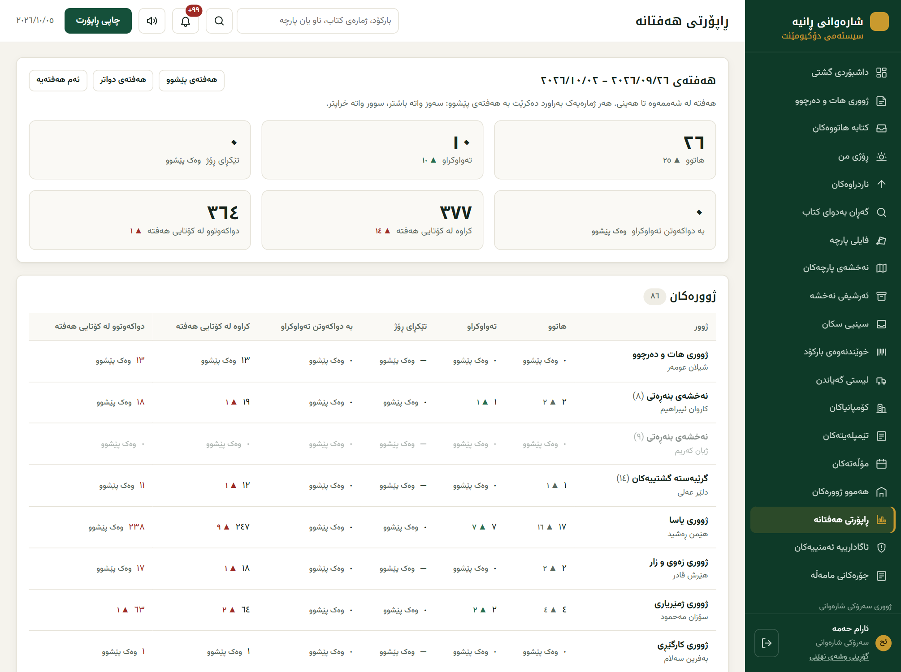
کێ: تەنها سەرۆک و جێگرەکەی.
سیستەم خۆی چاودێری تۆماری چالاکی دەکات و ئەم پێنج شتە ڕاپۆرت دەکات:
| ئاگاداری | مانا |
|---|---|
| کتابی زۆر لە کاتژمێرێکدا | کەسێک لە یەک کاتژمێردا ژمارەیەکی نائاسایی کتابی کردووەتەوە (بنەڕەت: ٥٠). |
| چوونەژوورەوەی شەو | کەسێک لە نێوان ١٠ی شەو و ٦ی بەیانیدا چووەتە ژوورەوە. |
| هەژماری IT | هەژماری IT هەوڵی کردنەوەی کتابێکی داوە. |
| هەوڵی دووبارەی ڕێگەپێنەدراو | کەسێک چەند جار هەوڵی کردنەوەی کتابێکی داوە کە مافی نییە (بنەڕەت: ١٠ لە نیو کاتژمێردا). |
| داگرتن لە ژوورێکی تر | کەسێک هاوپێچی کتابێکی داگرتووە کە لە ژوورێکی ترە. |
ئەم یاسایانە لە ناو بنکەی دراوەکاندا کاردەکەن، نەک لە بەرنامەکەدا. واتا هیچ ڕێگەیەک نییە بۆ تێپەڕاندنیان.
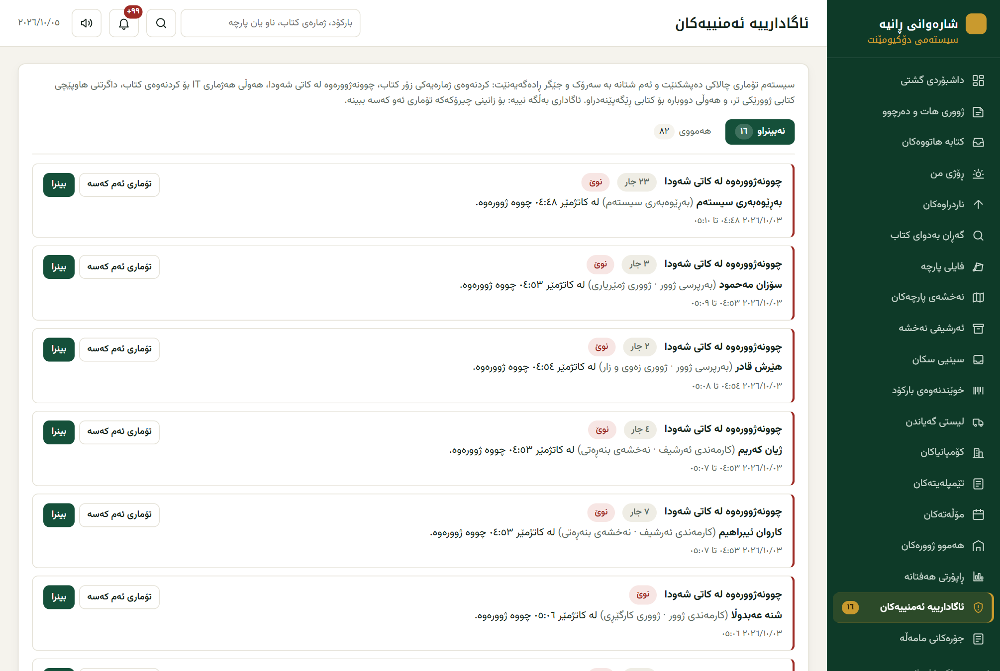
کتابی دواکەوتوو بەتەنها جارێک ئاماژەی پێ ناکرێت. سێ پلە هەیە:
| دوای | کێ ئاگادار دەکرێتەوە |
|---|---|
| ١ ڕۆژ | ئەو کەسەی کتابەکەی لایە (یان هەموو ژوورەکە). |
| ٣ ڕۆژ | بەرپرسی ژوورەکە. |
| ٥ ڕۆژ | سەرۆک و جێگرەکەی، و کتابەکە بە سوور لە داشبۆرد دەردەکەوێت. |
ئەم سێ ژمارەیە لە «جۆرەکانی مامەڵە» دەگۆڕدرێن (تەنها سەرۆک و جێگر)، و هەر جۆرێکی مامەڵە دەتوانێت ژمارەی تایبەتی خۆی هەبێت. هەر پلەیەک تەنها یەک جار بۆ هەر کتابێک ئاگادار دەکاتەوە.
خانەیەکی پرسیار بە زمانی ئاسایی: «کتابی ه/٢٠٢٦/٢٥ لە کوێیە؟»، «چەند کتابی دواکەوتوو لە ژووری یاسا هەیە؟». یاریدەدەر تەنها دەخوێنێتەوە — هیچ شتێک ناگۆڕێت و هیچ کتابێک نانێرێت — و تەنها ئەو زانیارییانە دەبینێت کە سەرۆک خۆی دەیبینێت. هەموو پرسیارێک و هەموو وەڵامێک تۆمار دەکرێت.
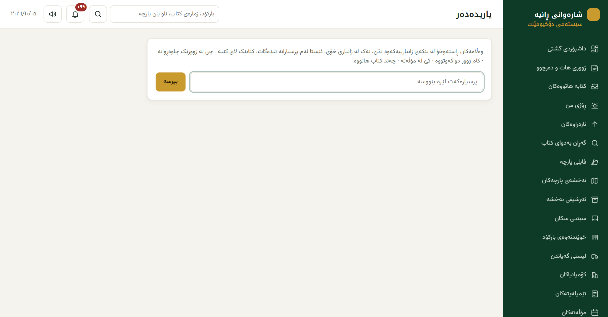
پەڕەیەکی تایبەت بۆ شاشەی دیوار: ژمارەکانی ئەمڕۆ، ژوورە قەرەباڵغەکان و کتابە دواکەوتووەکان، بەبێ ئەوەی کەس دەستی لێبدات. خۆی نوێ دەبێتەوە.
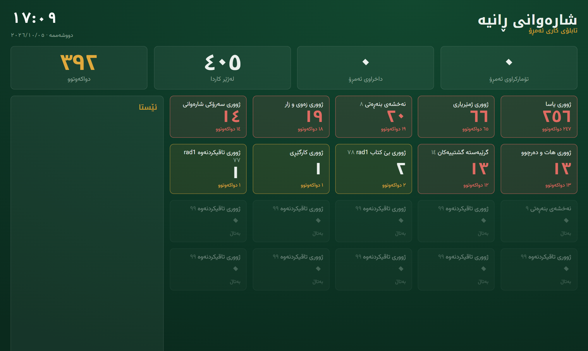
کێ: سەرۆک، جێگر، بەڕێوەبەر.
باری هەر ژوورێک لە یەک شاشەدا: چەند کتابی کراوە، چەندی دواکەوتووە، کێ بەرپرسە و ئایا لە مۆڵەتە. لێرەوە دەتوانیت بچیتە ناو هەر ژوورێک و کتابەکانی ببینیت.
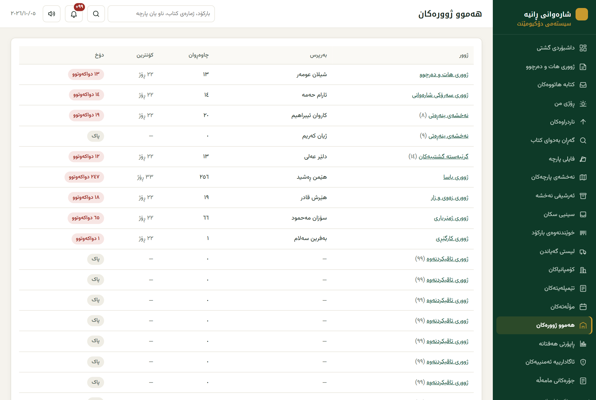
تەنها سەرۆک دەتوانێت سیستەم قوفڵ بکات. لە کاتی قوفڵدا هەموو بەکارهێنەران دەردەکرێن و پەیامێکی دیاریکراو دەبینن. ئەمە بۆ ڕۆژانێکی نائاسایییە (پشکنین، گۆڕانکاری گەورە). کردنەوەی دووبارەش هەر لەلایەن سەرۆکەوەیە. هەردوو کردارەکە تۆمار دەکرێن.
ئەو پەڕانەی هەژمار و ژوور و ڕێکخستنەکان بەڕێوە دەبەن.
کێ: تەنها IT.
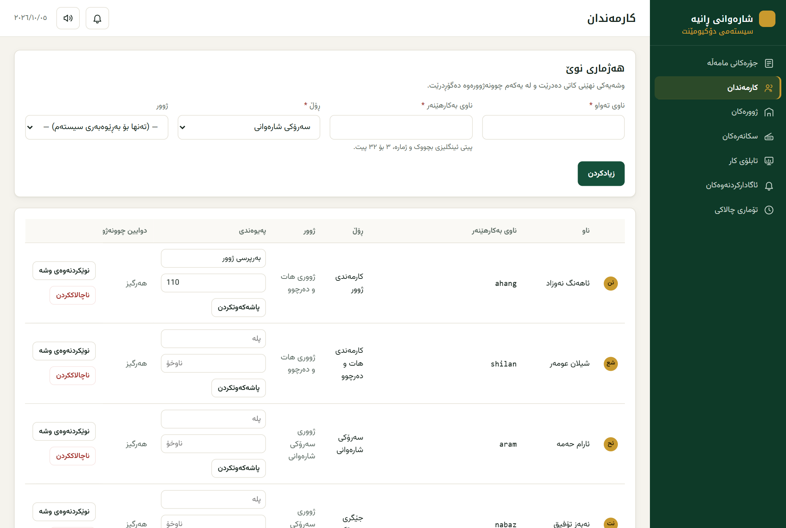
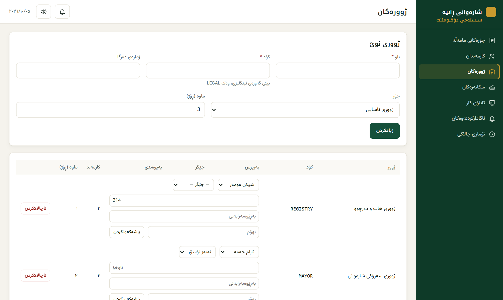
کێ: کارمەندی هات و دەرچوو، سەرۆک، جێگر، IT. پلەکانی بەرزکردنەوە تەنها سەرۆک و جێگر.
هەر جۆرێکی مامەڵە ئەمانەی هەیە:
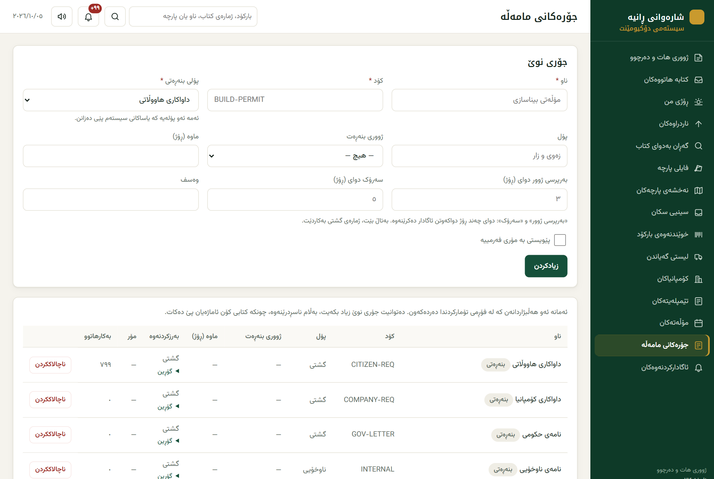
کێ: IT، سەرۆک، جێگر.
سکانەری تۆڕی زیاد دەکرێت بە ناو و ناونیشانی تۆڕ. «زیادکردن و تاقیکردنەوە» یەکسەر پەیوەندی تاقی دەکاتەوە. دوای ئەوە، لە فۆڕمی تۆمارکردن و لە پەڕەی کتابدا دوگمەی «سکانکردن لە سکانەر» دەردەکەوێت.
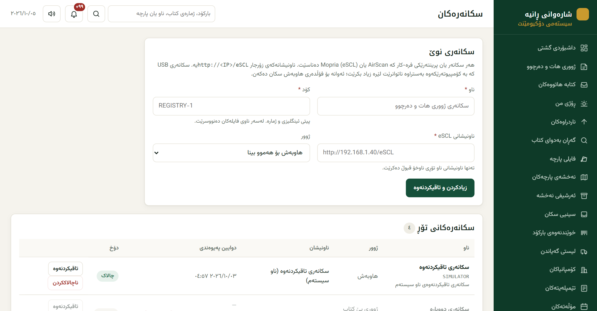
| ڕێکخستن | بنەڕەت | چی دەکات |
|---|---|---|
| escalate_reminder_days | ١ | دوای چەند ڕۆژ بیری ئەو کەسە بخرێتەوە کە کتابەکەی لایە. |
| escalate_head_days | ٣ | دوای چەند ڕۆژ بەرپرسی ژوور ئاگادار بکرێتەوە. |
| escalate_mayor_days | ٥ | دوای چەند ڕۆژ سەرۆک ئاگادار بکرێتەوە. |
| alert_bulk_opens | ٥٠ | چەند کتاب لە کاتژمێرێکدا بە نائاسایی دادەنرێت. |
| alert_night_from / _to | ٢٢ / ٦ | کاتی شەو، بۆ ئاگاداری چوونەژوورەوەی شەو. |
| alert_refusals | ١٠ | چەند ڕێگەپێنەدان لە نیو کاتژمێردا ئاگاداری دروست دەکات. |
| session_idle_minutes | ٣٠ | دوای چەند خولەکی بێکاری، دەرچوونی خۆکار. |
| session_max_hours | ١٢ | زۆرترین درێژایی یەک دانیشتن. |
| incoming/outgoing/manifest prefix | ه / د / گ | پێشگری ژمارەکان. |
| system_locked | false | ئایا سیستەم قوفڵکراوە. |
دوو پەڕە کە بەبێ هیچ هەژمارێک دەکرێنەوە — و تەنها ئەوەندە دەڵێن کە پێویستە.
ناونیشان: sharawani01.vercel.app/track — یان بە خوێندنەوەی QRـی سەر پسوولە.
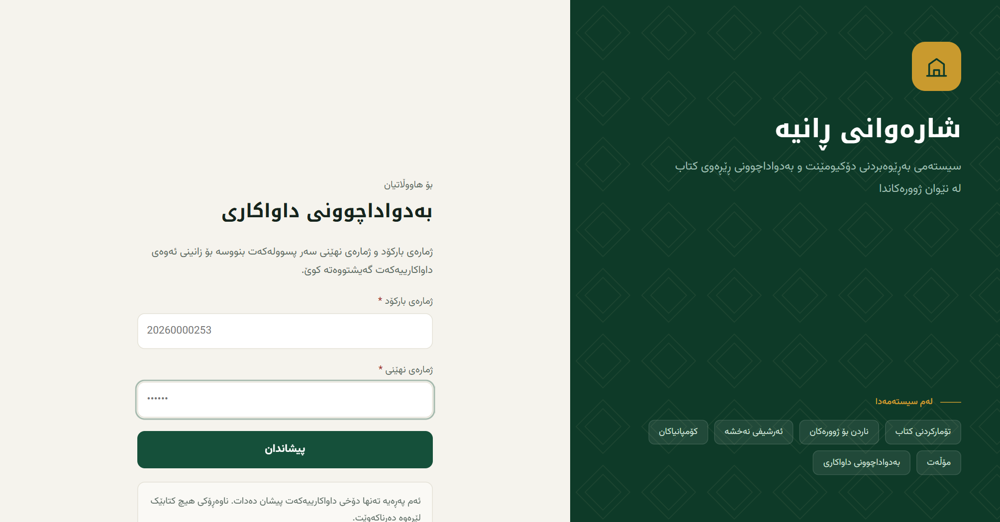
بابەتی کتابەکە نا، ناوی نێردەر نا، ناوی کارمەندان نا، تێبینییەکان نا، هیچ فایلێک نا. تەنها قۆناغ، ناوی ژوور و سێ بەروار. هەوڵی هەڵە تۆمار دەکرێت و دوای چەند هەوڵێک، ئەو ئامێرە ڕادەگیرێت.
ناونیشان: sharawani01.vercel.app/verify — یان QRـی سەر وەڵامەکە.
هەرکەسێک کتابێکی شارەوانی بە دەستییەوە بێت (بانک، دادگا، فەرمانگەیەکی تر)، QRـەکە دەخوێنێتەوە یان کۆدی دە پیتییەکە دەنووسێت. پەڕەکە دەڵێت:
ناوەڕۆکی کتابەکە هەرگیز پیشان نادرێت. ئەگەر کاغەزەکە شتێکی تر بڵێت، کاغەزەکە ساختەیە.
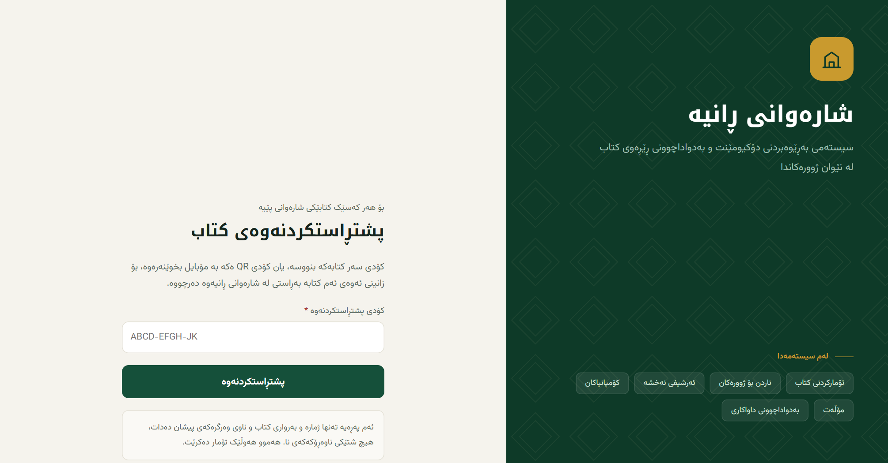
کێ چی دەبینێت، چی تۆمار دەکرێت، و بۆچی ناتوانرێت بسڕدرێتەوە.
ئەمە بنەمای سیستەمەکەیە: هەرکەس تەنها ئەوە دەبینێت کە کارەکەی پێویستی پێیەتی.
| پەڕە | کێ دەیبینێت |
|---|---|
| داشبۆردی گشتی، یاریدەدەر | تەنها سەرۆک و جێگرەکەی |
| ئاگادارییە ئەمنییەکان | تەنها سەرۆک و جێگرەکەی |
| هەموو ژوورەکان | سەرۆک، جێگر، بەڕێوەبەر |
| ڕاپۆرتی هەفتانە | سەرۆک و جێگر (هەموو)، بەڕێوەبەر (بەڕێوەبەرایەتی خۆی)، بەرپرس (ژووری خۆی) |
| ژووری هات و دەرچوو | کارمەندی هات و دەرچوو، سەرۆک، جێگر |
| کتابە هاتووەکان، ڕۆژی من | هەموو کەسێکی خاوەن ژوور |
| گەڕان، فایلی پارچە، نەخشە | هەموو کەسێکی خاوەن ژوور. IT نا |
| ئەرشیفی نەخشە | هەموو کەس جگە لە هات و دەرچوو، کارگێڕی و IT |
| سینیی سکان، بارکۆد، لیستی گەیاندن | ژوورەکان. IT نا |
| کۆمپانیاکان | بینین: هەموو ژوورەکان. گۆڕین: هات و دەرچوو، ژوورەکان، سەرۆک |
| تێمپلەیتەکان | زۆربەی ڕۆڵەکان. دروستکردن: کارگێڕی، سەرۆک، جێگر |
| مۆڵەتەکان | هەموو کەس بۆ خۆی. پەسەندکردن: کارگێڕی، سەرۆک، جێگر، بەڕێوەبەر |
| کارمەندان و ژوورەکان (admin) | تەنها IT |
| جۆرەکانی مامەڵە | هات و دەرچوو، سەرۆک، جێگر، IT |
| تۆماری چالاکی | سەرۆک، جێگر، IT، بەرپرسان (ژووری خۆیان) |
| قوفڵکردنی سیستەم | تەنها سەرۆک |
| بەدواداچوون و پشتڕاستکردنەوە | هەرکەس، بەبێ هەژمار |
بۆ تۆ «نەدۆزرایەوە»ـیە، تەنانەت ئەگەر ناونیشانەکەی بزانیت. ئەمە لە بنکەی دراوەکاندا جێبەجێ دەکرێت، نەک بە شاردنەوەی دوگمە. هەر هەوڵێکی ئەو جۆرە تۆمار دەکرێت.
هەموو شتێک تۆمار دەکرێت: کێ، کەی، لە کام ئامێرەوە، و لەسەر کام کتاب. تۆمارەکە زیادکراوە، نەک گۆڕاو — هیچ کەس، تەنانەت IT، ناتوانێت دێڕێکی لێ بسڕێتەوە یان بیگۆڕێت.
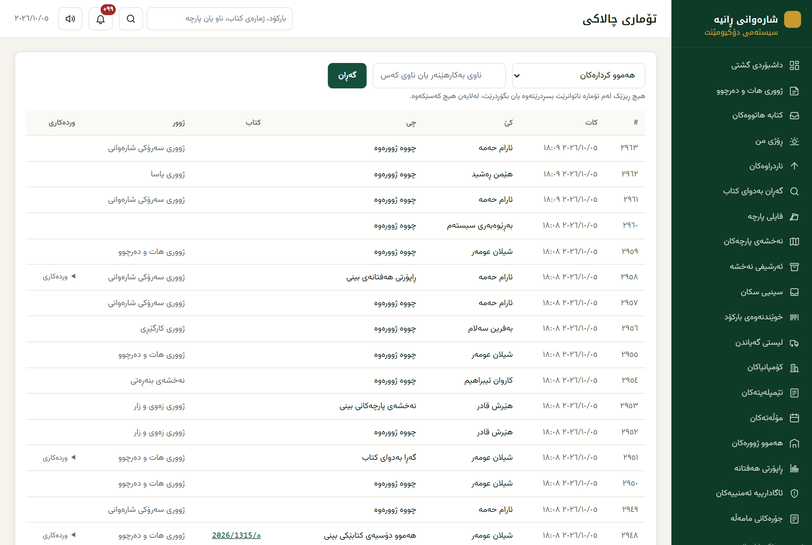
دەکات: هەژمار دروست دەکات و ناچالاکیان دەکات، وشەی نهێنی نوێ دەکاتەوە، ژوور دروست دەکات، سکانەر زیاد دەکات، تۆماری چالاکی دەبینێت.
ناکات: هیچ کتابێک، هیچ هاوپێچێک، هیچ سکانێک، هیچ لیستێکی گەیاندن، هیچ فایلێکی کۆمپانیا — هیچیان ناتوانێت بکاتەوە. زەنگەکەشی هیچی لەسەر کتابەکان پێ ناڵێت.
ئەمانە ئەو زەنگانەن کە وەریدەگریت:
| زەنگ | کەی دێت |
|---|---|
| کتابێکی نوێ گەیشتە ژوورەکەت | کاتێک کتابێک بۆ ژوورەکەت دەنێردرێت. |
| کتابێک گەڕایەوە بۆ لات | ژوورێک کتابەکەی گەڕاندووەتەوە. |
| کتابێکی ناردووت تەواو بوو | ئەو ژوورەی ناردووتە بۆی، کارەکەی تەواو کردووە. |
| کاتی کتابێک لە نزیکەوە بەسەردەچێت / دواکەوتووە | پێش و دوای کۆتا بەروار. |
| بیرخستنەوە: کتابێک لای تۆ دواکەوتووە | پلەی یەکەمی بەرزکردنەوە. |
| کتابێک لە ژوورەکەت چەند ڕۆژە دواکەوتووە | پلەی دووەم — بۆ بەرپرسی ژوور. |
| کتابێک گەیشتە لای سەرۆک | پلەی سێیەم. |
| پەڕگەی کاغەزی وەرگیرا | کاتێک کاغەزەکە بەڕاستی گەیشتووە. |
| تێبینییەکی نوێ لەسەر کتابێک | کەسێک تێبینی نووسیوە. |
| لیستێکی گەیاندن بەرەو ژوورەکەت / لیستەکەت وەرگیرا | گواستنەوەی کاغەز. |
| داواکاری مۆڵەت / وەڵامی مۆڵەتەکەت | مۆڵەتەکان. |
| لە ماوەی مۆڵەتی بەرپرسدا، کتابەکان بۆ تۆ دێن | کاتێک دەبیتە جێگر. |
| کتابێک لە ژوورەکەت هەڵوەشێنرایەوە / داخرا | بۆ ئەوەی کتاب بێدەنگ لە لیستەکەت نەفەوتێت. |
| هامشێکی دەستنووس لەسەر کتابێک نووسرا | کاتێک سەرۆک یان بەرپرس هامش دەنووسێت. |
| ڕاپۆرتی هەفتانە ئامادەیە | هەموو شەممەیەک. |
| ئاگادارییەکی ئەمنی | تەنها بۆ سەرۆک و جێگر. |
زەنگەکە خۆی نوێ دەبێتەوە. ئەگەر لە مۆبایلدا ڕێگەت دا، ئاگادارکردنەوە دەگاتە مۆبایلەکەشت. دوگمەی دەنگ لە سەرەوە، دەنگەکان دەکوژێنێتەوە.
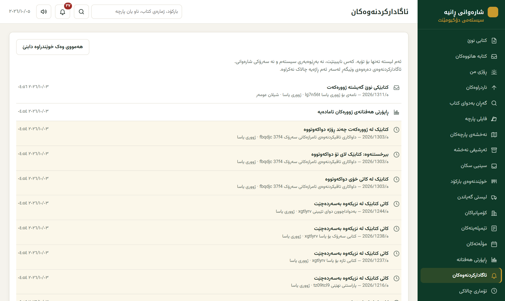
ئەمە بەشی بەڕێوەبەری سیستەمە: چۆن سیستەمەکە هەڵدەستێت، چۆن پارێزراوە، و چی بکرێت لە ڕۆژێکی خراپدا.
سیستەمەکە لە ناو کۆنتەینەردا (Docker) کاردەکات. لە فۆڵدەری sharawani_system:
| فەرمان | چی دەکات |
|---|---|
| docker compose up -d | هەموو سیستەمەکە هەڵدەستێنێت. |
| docker compose ps | دەڵێت کام بەش کاردەکات. |
| docker compose logs -f app | ئەوەی لە سێرڤەرەکەدا ڕوودەدات پیشان دەدات. |
| docker compose stop | ڕایدەگرێت (زانیارییەکان دەمێننەوە). |
| docker compose up -d --build app | دوای گۆڕانکاری لە کۆدەکە، بەرنامەکە نوێ دەکاتەوە. |
پێنج بەش هەن: app (وێبسایتەکە)، db (بنکەی دراوە)، jobs (کارە خۆکارەکان)، backup (پاڵپشتی شەوانە)، clamav (پشکنینی ڤایرۆس).
هەموو شەوێک سێ فایل دروست دەبن، هەمان ناویان هەیە:
فایلەکان شیفرە کراون. بەبێ وشەی تێپەڕی پاڵپشتی، هیچیان ناکرێنەوە. هەموو شەوێک سیستەم خۆی پاڵپشتییەکە تاقی دەکاتەوە بۆ ئەوەی دڵنیا بێت دەگەڕێتەوە.
پێویستت بە سێ شتە: ئامێرێک، فۆڵدەری backups، و وشەی تێپەڕی پاڵپشتی. ئینجا:
docker compose up -d db
docker compose run --rm backup restore latest --force
docker compose up -d
پێش هەر گۆڕانکارییەک، داوات لێدەکات وشەی restore بنووسیت، و پێت دەڵێت چی دەگەڕێنێتەوە: کام ڕۆژ، چەند کتاب، چەند سکان. پێش گەڕاندنەوە، بەرنامەکە مەهێنەرەوە. وردەکاری تەواو لە فایلی RESTORE.mdدایە.
| کار | کەی | چی دەکات |
|---|---|---|
| مۆری تۆمار | ١١:٤٥ی شەو | مۆری دەرونی لەسەر تۆماری چالاکی دادەنێت. |
| پشکنینی مۆر | ١١:٥٠ی شەو | دڵنیا دەبێتەوە کە تۆمارەکە دەستکاری نەکراوە. |
| پشکنینی ڕێسا | ٢:٠٠ی بەیانی | یاساکانی بنکەی دراوە تاقی دەکاتەوە (ژمارەی دووبارە، دۆخی ناتەواو…). |
| کۆتا بەروارەکان | ٧:٣٠ی بەیانی | ئاگادارکردنەوەی دواکەوتن و پلەکانی بەرزکردنەوە دەنێرێت؛ شەممەش ڕاپۆرتی هەفتانە. |
| پاککردنەوەی دانیشتنەکان | هەموو کاتژمێرێک | دانیشتنە کۆنەکان لادەبات. |
| خوێندنەوەی سکان | هەر ٢ خولەک | نووسینی ناو سکانە نوێیەکان دەخوێنێتەوە بۆ گەڕان. |
| چاودێری سینیی سکان | هەر خولەکێک | فایلە نوێیەکانی سکانەر دەباتە سینی. |
| پاڵپشتی | شەوانە | پاڵپشتی و تاقیکردنەوەی. |
ئەو شتانەی زۆرجار ڕوودەدەن و چارەسەرەکانیان.
| کێشە | چارەسەر |
|---|---|
| وشەی نهێنی قبوڵ ناکات | دڵنیابە لە ناونیشانەکە (نموونە یان ناوخۆیی — وشەکانیان جیاوازن). ناوی بەکارهێنەر بە پیتی ئینگلیزی بچووکە. |
| دوای چەند هەوڵێک ڕێگە نادات | بە ئەنقەستە. چەند خولەکێک چاوەڕێ بکە. |
| وشەی نهێنیم لەبیر چووە | IT لە «کارمەندان» وشەیەکی کاتی نوێ دەکاتەوە. |
| خۆی دەرم دەکات | دوای ٣٠ خولەک بێکاری، دەرچوونی خۆکارە. |
| «ئێستا چوویتە ژوورەوە» دەڵێت | کەسێکی تر لەم وێبگەڕەدا چووەتە ژوورەوە. «چوونەژوورەوە وەک کەسێکی تر» دابگرە. |
| کێشە | چارەسەر |
|---|---|
| کتابەکە نادۆزرێتەوە | لەوانەیە کتابەکە نەگەیشتبێتە ژوورەکەت. لە بارکۆدەکەیەوە بیپشکنە، یان داوا لە بەرپرسەکەت بکە. |
| بە هەڵە ناردم | «گەڕاندنەوەی ناردنەکە» — بەڵام تەنها پێش ئەوەی ژوورەکە کاری لەسەر بکات. |
| کتابەکە لە لیستەکەم نەما | یان داخراوە، یان هەڵوەشێنراوەتەوە، یان چووەتە ژووری دواتر. لە «گەڕان» یان لە مێژووی کتابەکەدا دەیدۆزیتەوە. |
| کتابەکە دەڵێت دواکەوتووە بەڵام کاغەزەکەم نەگەیشتووە | ئەوە بە ئەنقەست جیا تۆمار دەکرێت. «وەرگرتنی پەڕگەی کاغەزی» تەنها کاتێک بدە کە بەڕاستی بە دەستت گەیشتبێت، و بە بەرپرسەکەت بڵێ. |
| ناتوانم بنێرم | کتابەکە لای تۆ نییە، یان داخراوە. تەنها ئەو کەسەی لایەتی دەتوانێت بینێرێت. |
| کێشە | چارەسەر |
|---|---|
| فایلەکە ڕەت دەکرێتەوە | جۆرەکەی ڕێگەپێدراو نییە، یان لە ٥٠ مێگابایت گەورەترە، یان ڤایرۆسی تێدایە. |
| PDFـەکە پیشان نادرێت | دوگمەی «داگرتن» بەکاربهێنە. وێبگەڕێکی نوێ (Chrome یان Edge) بەکاربهێنە. |
| مۆرەکە لە شوێنی هەڵەدایە | فایلی مۆرکراو ناگۆڕدرێت؛ لەسەر فایلە ڕەسەنەکە دووبارە مۆر بدە و کۆپییەکی نوێ دروست دەبێت. |
| سکانەکە لە سینیدا دەرنەکەوت | چەند خولەکێک چاوەڕێ بکە (هەر خولەکێک پشکنین دەکرێت)، یان لە «زیادکردنی سکان» بە دەست باری بکە. |
| گەڕان ناوەڕۆکی سکان نادۆزێتەوە | خوێندنەوەی سکان هەر دوو خولەک کاردەکات؛ بۆ سکانی خراپ لەوانەیە هیچ نەخوێنرێتەوە. |
| کێشە | چارەسەر |
|---|---|
| هیچ پەڕەیەک ناکرێتەوە | لە ئامێری سێرڤەر: docker compose ps. ئەگەر app ڕاوەستابوو: docker compose up -d. |
| هەموو کەس دەرکراوە و پەیامێک دەردەکەوێت | سیستەم قوفڵکراوە. تەنها سەرۆک دەتوانێت بیکاتەوە. |
| زەنگەکە ناجوڵێت | پەڕەکە نوێ بکەرەوە. ئەگەر لەسەر مۆبایلە، ڕێگەی ئاگادارکردنەوە بدە. |
| کات یان بەروار هەڵەیە | هەموو کاتەکان بە کاتی بەغدان. ئەگەر جیاوازە، کاتی سێرڤەرەکە بپشکنە. |
| سایتی نموونە هێواشە | یەکەم کردنەوە دوای بێکاری ٥–١٠ چرکە دەخایەنێت؛ دواتر خێرایە. |
لیستی تەواوی پەڕەکان، کردارە تۆمارکراوەکان و وشەنامە.
| ناونیشان | پەڕە |
|---|---|
| /login | چوونەژوورەوە |
| /password | گۆڕینی وشەی نهێنی |
| /dashboard | داشبۆردی گشتی |
| /registry | ژووری هات و دەرچوو |
| /registry/new | تۆمارکردنی کتابی نوێ |
| /registry/photo | وێنەگرتنی کتاب |
| /inbox | کتابە هاتووەکان |
| /my-day | ڕۆژی من |
| /outgoing | ناردراوەکان |
| /documents | گەڕان بەدوای کتاب |
| /documents/:id | پەڕەی کتابێک |
| /documents/:id/reply | نووسینی وەڵام |
| /documents/:id/margin | هامشی دەستنووس |
| /documents/:id/compare | بەراوردی هاتوو و دەرچوو |
| /documents/:id/case | هەموو دۆسیەکە |
| /documents/:id/print | چاپی پەڕەی کتاب |
| /documents/:id/receipt | چاپی پسوولە |
| /attachments/:id/view | بینینی فایل |
| /attachments/:id/stamp | مۆرکردنی سکان |
| /plots | فایلی پارچە |
| /plots/map | نەخشەی پارچەکان |
| /archive | ئەرشیفی نەخشە |
| /tray | سینیی سکان |
| /scan | سکانکردن لە سکانەر |
| /barcode | خوێندنەوەی بارکۆد |
| /manifests | لیستی گەیاندن |
| /companies | کۆمپانیاکان |
| /templates | تێمپلەیتەکان |
| /leave | مۆڵەتەکان |
| /rooms | هەموو ژوورەکان |
| /reports/weekly | ڕاپۆرتی هەفتانە |
| /alerts | ئاگادارییە ئەمنییەکان |
| /assistant | یاریدەدەر |
| /board | تابلۆی کار |
| /notifications | ئاگادارکردنەوەکان |
| /log | تۆماری چالاکی |
| /admin/doc-types | جۆرەکانی مامەڵە |
| /admin/users | کارمەندان (IT) |
| /admin/rooms | ژوورەکان (IT) |
| /admin/scanners | سکانەرەکان |
| /track | بەدواداچوونی داواکاری (گشتی) |
| /verify | پشتڕاستکردنەوەی کتاب (گشتی) |
هەر دێڕێکی تۆماری چالاکی یەکێک لەمانەیە. ئەم لیستە تەواوە.
| کردار | بە کوردی |
|---|---|
| چوونەژوورەوە و هەژمار | |
| auth.login | چووە ژوورەوە |
| auth.login_failed | هەوڵی چوونەژوورەوەی سەرنەکەوتوو |
| auth.login_throttled | چوونەژوورەوە بۆ ماوەیەک ڕاگیرا |
| auth.logout | دەرچوو |
| auth.password_changed | وشەی نهێنی گۆڕی |
| auth.session_revoked | دانیشتنێک کۆتایی پێهێنرا |
| push.subscribed | ئاگادارکردنەوەی مۆبایلی چالاککرد |
| push.removed | ئاگادارکردنەوەی مۆبایلی لابرد |
| user.created | هەژماری دروستکرد |
| user.updated | هەژماری گۆڕی |
| user.password_reset | وشەی نهێنی نوێکردەوە |
| user.deactivated | هەژماری ناچالاککرد |
| کتاب | |
| document.registered | کتابی تۆمارکرد |
| document.updated | کتابی دەستکاری کرد |
| document.viewed | کتابی کردەوە |
| document.printed | کتابی چاپکرد |
| document.closed | کتابی داخست |
| document.cancelled | کتابی هەڵوەشاندەوە |
| document.legacy_imported | کتابی کۆنی هێنایە ناو سیستەم |
| case.viewed | هەموو دۆسیەی کتابێکی بینی |
| compare.viewed | هاتوو و دەرچووی کتابێکی بەراورد کرد |
| margin.written | هامشی دەستنووسی لەسەر کتاب نووسی |
| stamp.applied | مۆری هاتوو/دەرچووی لە سکانێک دا |
| verify.issued | کۆدی پشتڕاستکردنەوەی بۆ کتاب دەرکرد |
| verify.hit | کتابێک پشتڕاستکرایەوە |
| verify.miss | پشتڕاستکردنەوەیەک نەدۆزرایەوە |
| verify.throttled | پشتڕاستکردنەوە بۆ ماوەیەک ڕاگیرا |
| note.added | تێبینی نووسی |
| receipt.printed | پسوولەی چاپکرد |
| ناردن و ڕێڕەو | |
| step.sent | کتابی نارد |
| step.sequence_sent | کتابی بە ڕیزبەندی نارد |
| step.activated | نۆرەی ژووری دواتر هات |
| step.received | کتابی وەرگرت |
| step.completed | هەنگاوی تەواوکرد |
| step.forwarded | کتابی بۆ ژوورێکی تر نارد |
| step.returned | کتابی گەڕاندەوە |
| step.recalled | ناردنەکەی گەڕاندەوە |
| step.reassigned | کتابی دایە کەسێکی تر |
| step.skipped | هەنگاوێکی تێپەڕاند |
| step.cancelled | هەنگاوێک هەڵوەشێنرایەوە |
| step.paper_received | پەڕگەی کاغەزی وەرگرت |
| route_template.created | ڕێڕەوی ئامادەی دروستکرد |
| route_template.updated | ڕێڕەوی ئامادەی گۆڕی |
| فایل و سکان | |
| attachment.added | هاوپێچی زیادکرد |
| attachment.viewed | هاوپێچی بینی |
| attachment.downloaded | هاوپێچی داگرت |
| attachment.printed | هاوپێچی چاپکرد |
| attachment.rejected_virus | هاوپێچێک بەهۆی ڤایرۆسەوە ڕەتکرایەوە |
| archive.uploaded | نەخشەی بارکرد |
| archive.updated | زانیاری نەخشەی گۆڕی |
| archive.viewed | نەخشەی بینی |
| archive.downloaded | نەخشەی داگرت |
| archive.verified | نەخشەی پشتڕاستکردەوە |
| archive.linked | نەخشەی بە کتابەوە بەست |
| archive.unlinked | نەخشەی لە کتاب لابرد |
| archive.location_changed | شوێنی نەخشەی گۆڕی |
| archive.batch_opened | کۆمەڵێک نەخشەی کردەوە |
| archive.batch_qc | کۆمەڵێک نەخشەی پشکنی |
| tray.detected | سکانێکی نوێ گەیشتە سینی |
| tray.claimed | سکانی بە کتابەوە بەست |
| tray.archived | سکانی ناردە ئەرشیف |
| scanner.added | سکانەری زیادکرد |
| scanner.changed | سکانەری گۆڕی |
| کاغەز و گەیاندن | |
| manifest.created | لیستی گەیاندنی دروستکرد |
| manifest.received | لیستی گەیاندنی وەرگرت |
| manifest.cancelled | لیستی گەیاندنی هەڵوەشاندەوە |
| manifest.printed | لیستی گەیاندنی چاپکرد |
| barcode.scanned | بارکۆدی خوێندەوە |
| barcode.miss | بارکۆدێکی نەناسراو خوێندرایەوە |
| کۆمپانیا، تێمپلەیت، مۆڵەت | |
| company.created | کۆمپانیای تۆمارکرد |
| company.updated | زانیاری کۆمپانیای گۆڕی |
| company.linked | کتابی بە کۆمپانیاوە بەست |
| company.unlinked | کتابی لە کۆمپانیا لابرد |
| company.file_added | پەڕگەی کۆمپانیای زیادکرد |
| company.file_withdrawn | پەڕگەی کۆمپانیای کشاندەوە |
| company.viewed | کۆمپانیای کردەوە |
| doc_type.created | جۆری مامەڵەی زیادکرد |
| doc_type.updated | جۆری مامەڵەی گۆڕی |
| template.created | تێمپلەیتی دروستکرد |
| template.updated | تێمپلەیتی گۆڕی |
| template.filled | تێمپلەیتی پڕکردەوە |
| template.printed | تێمپلەیتی چاپکرد |
| template.deactivated | تێمپلەیتی ناچالاککرد |
| leave.requested | داوای مۆڵەت کرد |
| leave.approved | مۆڵەتی پەسەندکرد |
| leave.rejected | مۆڵەتی ڕەتکردەوە |
| leave.cancelled | مۆڵەتی هەڵوەشاندەوە |
| delegation.started | جێگر دەستبەکار بوو |
| delegation.ended | کاری جێگر کۆتایی هات |
| delegation.ended_early | کاری جێگر زووتر کۆتایی هات |
| هاووڵاتی | |
| track.hit | هاووڵاتییەک دۆخی کتابی بینی |
| track.miss | بەدواداچوونێکی هاووڵاتی نەدۆزرایەوە |
| track.throttled | بەدواداچوونی هاووڵاتی بۆ ماوەیەک ڕاگیرا |
| ڕاپۆرت، ئاگاداری و نەخشە | |
| notify.read_all | ئاگادارکردنەوەکانی خوێندەوە |
| report.viewed | ڕاپۆرتی هەفتانەی بینی |
| report.printed | ڕاپۆرتی هەفتانەی چاپکرد |
| alert.seen | ئاگادارییەکی ئەمنی بینی |
| plot.located | شوێنی پارچەیەکی لەسەر نەخشە دیاریکرد |
| plot.moved | شوێنی پارچەیەکی لەسەر نەخشە گۆڕی |
| map.viewed | نەخشەی پارچەکانی بینی |
| یاریدەدەر و گەڕان | |
| assistant.question | پرسیاری لە یاریدەدەر کرد |
| assistant.tool_call | یاریدەدەر زانیاری هێنا |
| assistant.answer | یاریدەدەر وەڵامی دایەوە |
| assistant.no_rows | یاریدەدەر هیچی نەدۆزییەوە |
| assistant.error | هەڵە لە یاریدەدەر |
| assistant.fallback | یاریدەدەر بە ڕێگای یەدەگ وەڵامی دایەوە |
| assistant.search_archive | یاریدەدەر لە ئەرشیف گەڕا |
| search.documents | گەڕا بەدوای کتاب |
| search.archive | گەڕا لە ئەرشیف |
| search.rooms | گەڕا بەدوای ژوور |
| search.people | گەڕا بەدوای کەس |
| سیستەم | |
| send.queued | ناردنی دەرەکی ڕیزکرا |
| send.sent | بۆ دەرەوە نێردرا |
| send.failed | ناردنی دەرەکی سەرنەکەوت |
| send.response_linked | وەڵامی دەرەکی بەسترایەوە |
| room.created | ژووری دروستکرد |
| room.updated | ژووری گۆڕی |
| directorate.updated | بەڕێوەبەرایەتیی گۆڕی |
| system.locked | سیستەمی داخست |
| system.unlocked | سیستەمی کردەوە |
| system.setting_changed | ڕێکخستنی سیستەمی گۆڕی |
| ops.backup_completed | یەدەگ گیرا |
| ops.backup_failed | گرتنی یەدەگ سەرنەکەوت |
| ops.backup_verified | یەدەگ پشکنرا |
| ops.migration_applied | سیستەم نوێکرایەوە |
| تر | |
| access.refused | داوای کتابێکی کرد کە ڕێگەی پێنەدرا |
| وشە | مانا |
|---|---|
| کتاب | هەر نامە، داواکاری یان بەڵگەنامەیەکی فەرمی کە تۆمار دەکرێت. |
| هاتوو / دەرچوو | ئەوەی دێتە ناو شارەوانی / ئەوەی دەچێتە دەرەوە. |
| هەنگاو | یەک وەستان لای ژوورێک، لە ناردنەوە تا تەواوکردن. |
| ڕێڕەو | زنجیرەی ئەو ژوورانەی کتابەکە پێیاندا تێپەڕیوە. |
| پەڕگە | دۆسیەی کاغەزی خۆی، نەک فایلی ناو سیستەم. |
| هاوپێچ | فایلێک کە بە کتابەکەوە لکێندراوە (سکان، نەخشە، بەڵگە). |
| هامش | ئەو نووسینەی بە دەست لەسەر کتابەکە دەنووسرێت، وەک ڕاسپاردە. |
| مۆری هاتوو / دەرچوو | مۆرە بچووکەکەی سەر سکان، بە ژمارە و بەرواردا. |
| بارکۆد | ژمارەی کتاب بە شێوەی خوێندنەوە بە ئامێر. |
| لیستی گەیاندن | لیستی ئەو کاغەزانەی پێکەوە لە ژوورێکەوە دەچنە ژوورێکی تر. |
| پلەکانی بەرزکردنەوە | ئەو ڕیزبەندییەی کە لێی دواکەوتن بەرز دەبێتەوە: کەس، بەرپرس، سەرۆک. |
| جێگر | ئەو کەسەی لە کاتی مۆڵەتی بەرپرسدا کتابەکان وەردەگرێت. |
| کۆدی پشتڕاستکردنەوە | کۆدی سەر کتابی دەرچوو کە ڕاستی کتابەکە دەسەلمێنێت. |
| سینیی سکان | شوێنی کۆکردنەوەی ئەو سکانانەی هێشتا بە کتابەوە نەبەستراون. |
ئەم ڕێنماییە لە ٢٠٢٦/١٠/٠٥ نووسراوە و ئەو سیستەمە وەسف دەکات کە لەو ڕۆژەدا کاری پێدەکرا. هەر گۆڕانکارییەک لە سیستەمەکەدا، پێویستی بە نوێکردنەوەی ئەم پەڕەیە دەبێت.